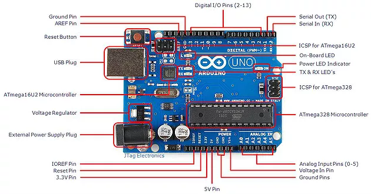
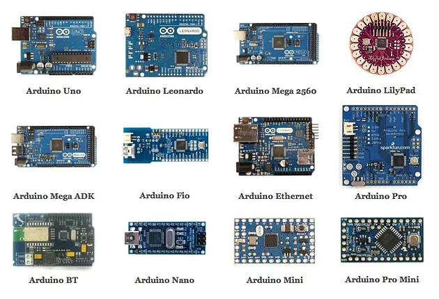
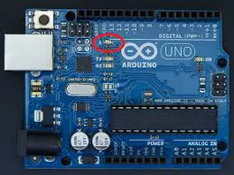
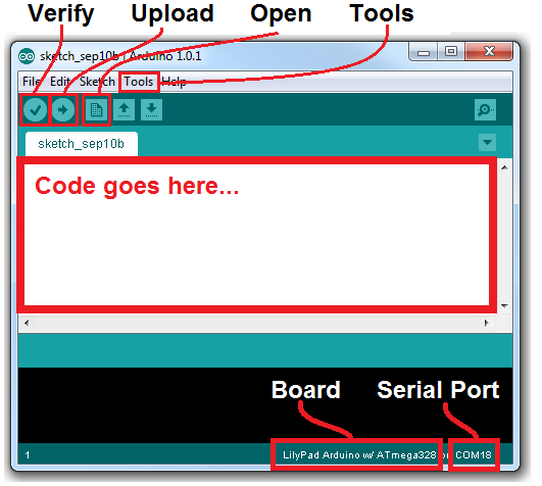
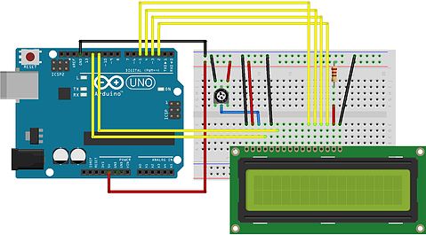
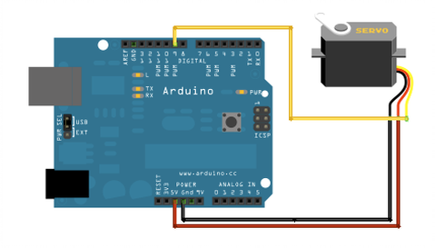

An Introduction to Arduino
20 Jan, 2018
You must have thought about your automatic wash machine as to how it took inputs by just making you press a few buttons, and then perform the tasks accordingly. We have seen something like this in our computers. So then deriving an analogy we can say that a small computer is embedded into the wash machine which is in fact true, we do use a small computer called as microcontroller.
Microcontrollers are basically small computers which include a processor core, memory, and programmable input/output. Microcontrollers are designed for embedded use. Microcontrollers though originally programmed only in assembly language, now also include various high-level programming languages, such as C, Python and JavaScript. general purpose languages.
There are many types of microcontroller architecture like ARM, ATMEL AVR, INTEL 8051.
What is Arduino?
Now to use a microcontroller you will have to develop a board, one such type is Arduino.
As defined on its website, Arduino is an open-source electronics platform based on easy-to-use hardware and software. They can read inputs – light on a sensor, a finger on a button, or a Twitter message – and turn it into an output – activating a motor, turning on an LED, publishing something online as desired. To do this we need to use the Arduino programming language (based on Wiring) and the arduino software(IDE), based on Processing.

The advantage of using Arduino are that it is in expensive, cross-platform,open-source and extensible software and hardware. There is an awesome community for arduino. The tutorials provided by the community and the various projects and blog posts make the ride of learning arduino easy and so it has become an useful utility for beginners.
There are many types of arduino boards which have different technical utilities.

Arduino IDE:
The current version of the Arduino IDE is 1.8.10 and is compatible with Windows, Linux and Mac OS. The arduino IDE can be easily installed from the website of arduino.
Example 1: How to blink a LED
There are many example codes in the arduino IDE itself. The following is for blinking an LED which is analogous to the regular “hello world” program.
In the arduino UNO board there is an led at pin 13 which will be used here. These pins varies for different arduino boards.

Sketch:
void setup() {
// initialize digital pin LED_BUILTIN as an output.
pinMode(LED_BUILTIN, OUTPUT);
}
// the loop function runs over and over again forever
void loop() {
digitalWrite(LED_BUILTIN, HIGH); // turn the LED on (HIGH is the voltage level)
delay(1000); // wait for a second
digitalWrite(LED_BUILTIN, LOW); // turn the LED off by making the voltage LOW
delay(1000); // wait for a second
}
Now before uploading this code onto the Arduino you need to set the type of board you are using and your USB port where you will be attaching your Arduino, this can be done in the tools menu. Then compile it and upload it on to the board using the icons given.

Example 2: How to interface an LCD with Arduino:
There is an LCD library in Arduino which can be used to interface an LCD Screen (compatible with Hitachi HD44780 driver) with it. The LCD can be used to display various messages as required.
Hardware Required:
-
Arduino or Genuino Board
-
LCD Screen (compatible with Hitachi HD44780 driver)
-
pin headers to solder to the LCD display pins
-
10k ohm potentiometer
-
220 ohm resistor
-
hook-up wires
-
breadboard
Circuit:

To wire your LCD screen to your board, connect the following pins:
-
LCD RS pin to digital pin 12
-
LCD Enable pin to digital pin 11
-
LCD D4 pin to digital pin 5
-
LCD D5 pin to digital pin 4
-
LCD D6 pin to digital pin 3
-
LCD D7 pin to digital pin 2
Sketch:
// include the library code:
#include
// initialize the library with the numbers of the interface pins
LiquidCrystal lcd(12, 11, 5, 4, 3, 2);
void setup() {
// set up the LCD’s number of columns and rows:
lcd.begin(16, 2);
// Print a message to the LCD.
lcd.print(“hello, world!”);
}
void loop() {
// Turn off the display:
lcd.noDisplay();
delay(500);
// Turn on the display:
lcd.display();
delay(500);
}
The arduino website can be checked for various other functions of the LCD library.
Example 3: How to sweep the shaft of servo motor:
The servo motor is used to control the speed, position and acceleration of the servo motor. Here we will be using the arduino to sweep the shaft of a RC back and forth across 180 degrees.
This example makes use of the Arduino servo library.
Hardware Required:
-
Arduino or Genuino Board
-
Servo Motor
-
wires
Circuit:

Sketch:
#include
Servo myservo;// create servo object to control a servo
// twelve servo objects can be created on most boards
int pos = 0; // variable to store the servo position
void setup() {
myservo.attach(9); // attaches the servo on pin 9 to the servo object
}
void loop() {
for (pos = 0; pos <= 180; pos += 1) { // goes from 0 degrees to 180 degrees
// in steps of 1 degree
myservo.write(pos);// tell servo to go to position in variable ‘pos’
delay(15); // waits 15ms for the servo to reach the position
}
for (pos = 180; pos >= 0; pos -= 1) { // goes from 180 degrees to 0 degrees
myservo.write(pos); // tell servo to go to position in variable ‘pos’
delay(15); // waits 15ms for the servo to reach the position
}
}
After this verify and upload the sketch onto the board. For more functions of the servo library , you can visit the arduino website.